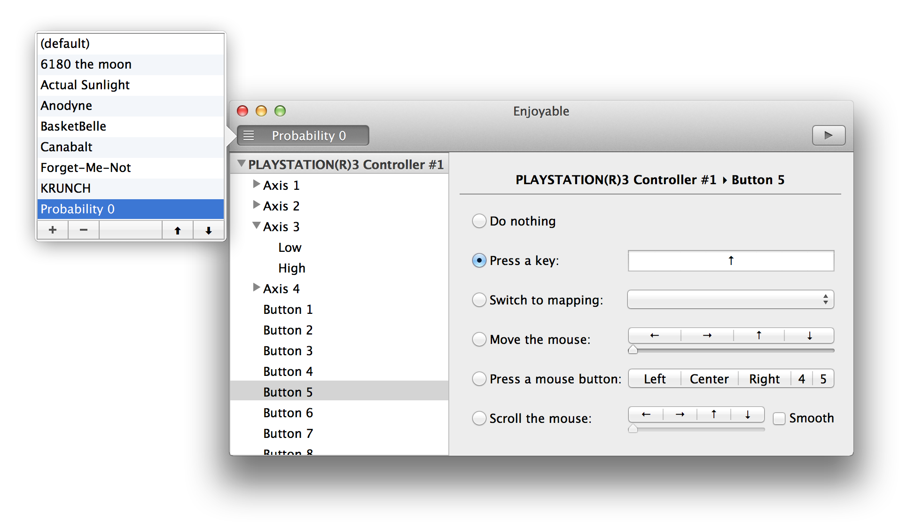

Use your gamepad or joystick like a mouse and keyboard on Mac OS
X.

Download Enjoyable 1.1 (1.2MB)
Enjoyable on GitHub
I play games with a Playstation 3 controller, so these will be useless if you have a different controller. These are the mappings I use for games I like. To use them, just save them and double-click on them in Finder, or use ⌘O in Enjoyable to import them.
Enjoyable is free software written by Joe Wreschnig and is based on the Enjoy codebase written by Yifeng Huang and Sam McCall.
Copyright 2013 Joe Wreschnig
2012 Yifeng Huang
2009 Sam McCall, University of Otago
Permission is hereby granted, free of charge, to any person obtaining a copy of this software and associated documentation files (the "Software"), to deal in the Software without restriction, including without limitation the rights to use, copy, modify, merge, publish, distribute, sublicense, and/or sell copies of the Software, and to permit persons to whom the Software is furnished to do so, subject to the following conditions:
The above copyright notice and this permission notice shall be included in all copies or substantial portions of the Software.
THE SOFTWARE IS PROVIDED "AS IS", WITHOUT WARRANTY OF ANY KIND, EXPRESS OR IMPLIED, INCLUDING BUT NOT LIMITED TO THE WARRANTIES OF MERCHANTABILITY, FITNESS FOR A PARTICULAR PURPOSE AND NONINFRINGEMENT. IN NO EVENT SHALL THE AUTHORS OR COPYRIGHT HOLDERS BE LIABLE FOR ANY CLAIM, DAMAGES OR OTHER LIABILITY, WHETHER IN AN ACTION OF CONTRACT, TORT OR OTHERWISE, ARISING FROM, OUT OF OR IN CONNECTION WITH THE SOFTWARE OR THE USE OR OTHER DEALINGS IN THE SOFTWARE.
The joystick icon is from the Tango icon set and is public domain.